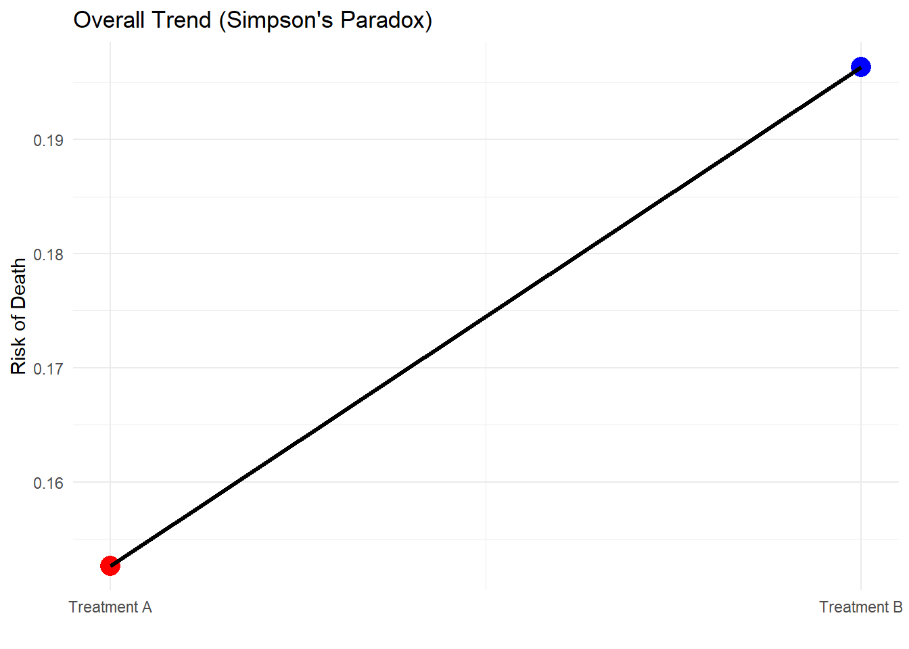

2 Randomized Control Trials
Class materials
Slides: Module 2
Recording: Module 2, Part 1
Recording: Module 2, Part 2
Textbook reading
Supplementary reading
Pearl, J. (2009). Causal inference in statistics: An overview. Statistics Surveys, 3, 96–146. Selected DAG examples from public health studies (provided in class)
Topics covered
- Randomized controlled trials: the gold standard
- Basic experimental design principles
- Limitations of RCTs in public health contexts
- Common threats to internal and external validity
- Critical reading exercise: evaluating a published RCT
2.1 Randomized controlled trials: the gold standard
Randomized Controlled Trials (RCTs) are widely considered the gold standard in causal inference because they offer the most rigorous way to establish whether a treatment or intervention truly causes an outcome. The key feature that sets RCTs apart is randomization: participants are randomly assigned to treatment or control groups, which ensures that—on average—all other characteristics (like age, health status, and behaviors) are equally distributed across groups. This process breaks any systematic link between confounders and treatment assignment, making the groups exchangeable and allowing us to interpret differences in outcomes as causal effects of the treatment.
Because of this design, RCTs eliminate the need to adjust for confounders or worry about selection bias in the same way observational studies do. They provide clean estimates of the average treatment effect (ATE) with high internal validity, especially when they are well-executed and have minimal loss to follow-up. However, RCTs are not without limitations. They can be expensive, time-consuming, and sometimes unethical or impractical—such as when withholding treatment would cause harm. Despite these limitations, RCTs serve as the benchmark against which other study designs are compared, and understanding their strengths helps us interpret both experimental and non-experimental evidence more critically.
In this simulation, I will recreate a simple randomized controlled trial (RCT) to estimate the effect of a new treatment on patient outcomes. I randomly assigned 2,000 individuals to either a treatment or control group and simulate their outcomes based on their assignment. Because of randomization, I expected the two groups to be similar in baseline characteristics, allowing for an unbiased estimate of the treatment effect. After simulating the data, I estimated the Average Treatment Effect (ATE) by comparing mean outcomes between the groups, and visualized the distribution of outcomes to confirm the treatment impact.
Simulated Baseline Data and Treatment Assignment
# pacman::p_load("dplyr", "ggplot2")
n <- 2000
age <- rnorm(n, 50, 10)
treatment <- rbinom(n, 1, 0.5)
y_0 <- 100 - 0.3 * age + rnorm(n, sd = 10)
y_1 <- y_0 - 10 + rnorm(n, sd = 5)
y <- ifelse(treatment == 1, y_1, y_0)
rct_data <- data.frame(
age = age,
treatment = treatment,
y = y
)
head(rct_data)## age treatment y
## 1 70.65289 0 70.64327
## 2 60.26631 0 84.00313
## 3 56.38332 1 62.38144
## 4 57.79955 1 55.04975
## 5 36.34660 0 84.09071
## 6 40.80364 1 49.72174Estimated the Average Treatment Effect (ATE)
ate_estimate <- rct_data |>
group_by(treatment) |>
summarize(mean_outcome = mean(y)) |>
summarize(ATE = diff(mean_outcome)) |>
pull(ATE)
paste("Estimated ATE: ", round(ate_estimate, 2))## [1] "Estimated ATE: -10.17"Visualization of the Outcome Distributions
ggplot(rct_data, aes(x = as.factor(treatment), y = y, fill = as.factor(treatment))) +
geom_boxplot(alpha = 0.7) +
labs(
title = "Distribution of Outcomes by Treatment Group",
x = "Treatment: Control (0) vs Treated (1)",
y = "Outcome"
) +
scale_fill_manual(values = c("red", "blue")) +
theme_minimal()
2.2 Basic Experimental Design Principles
At the heart of randomized controlled trials (RCTs) lies experimental design, the set of strategies we use to ensure that the comparison between groups is fair, unbiased, and informative. Good experimental design ensures that any differences in outcomes between the treatment and control groups can be confidently attributed to the treatment itself, and not to other confounding variables. Three basic principles guide experimental design: randomization, control, and replication.
- Randomization is the process of randomly assigning participants to treatment or control groups. This prevents systematic differences between groups at baseline and ensures that confounding variables (both known and unknown) are evenly distributed.
- Control involves creating a baseline group (the control group) that does not receive the treatment, allowing for a meaningful comparison.
- Replication refers to having enough participants so that random fluctuations even out, providing more precise and reliable estimates of the treatment effect.
In our previous simulation, we applied these principles by randomly assigning 2,000 individuals to either a treatment or control group, simulating outcomes based only on treatment status and baseline characteristics (age). Because we randomized treatment assignment, we can be confident that any observed difference in outcomes is causally attributable to the treatment, not to age differences, baseline health, or other confounders. Without randomization, we would have needed to control for these factors. This simulation highlights why randomization is considered the gold standard for causal inference.
2.3 Limitations of RCTs in Public Health Contexts
While randomized controlled trials (RCTs) are the gold standard for establishing causality, they are not without important limitations when applied to public health settings. First, ethical constraints often limit what interventions can be randomly assigned. For example, it would be unethical to randomly assign people to smoke or not smoke in order to study lung cancer. Public health research must often rely on observational studies where randomization is impossible.
Second, feasibility and cost can be major barriers. Conducting large-scale RCTs can require enormous resources, making them impractical for studying widespread or long-term public health interventions like school nutrition programs or climate effects on health. Generalizability is another concern. Many RCTs are conducted in tightly controlled environments with selective populations, meaning their results may not apply to broader, more diverse real-world populations.
In our earlier simulation, randomization guaranteed an unbiased estimate of the average treatment effect (ATE) within the study population. However, in real-world public health research, participants who volunteer for RCTs may differ from the general public, and interventions may behave differently outside of controlled settings. This highlights the importance of thinking critically about how experimental results translate into everyday public health practice.
2.4 Common Threats to Internal and External Validity
When evaluating any causal study, it’s critical to think about validity, whether the results are accurate (internal validity) and whether they generalize beyond the study setting (external validity).
Internal validity refers to whether the observed effect truly reflects the causal effect within the study population. Threats to internal validity include:
- Confounding, if randomization fails or is compromised (e.g., noncompliance with assigned treatment).
- Selection bias, if participants drop out or are lost to follow-up in a way that is related to both treatment and outcome.
- Measurement error, if outcomes or treatments are recorded inaccurately.
External validity, on the other hand, concerns whether results from the study can be generalized to other settings, populations, or time periods. Threats to external validity include:
- Non-representative samples, such as RCTs recruiting only highly motivated individuals who differ from the general population.
- Intervention differences, where the way a treatment is delivered in a trial setting doesn’t match how it would be implemented in the real world.
- Contextual factors, such as cultural, economic, or healthcare system differences that make the same intervention work differently elsewhere.
In the earlier RCT simulation, we achieved excellent internal validity because treatment was randomized perfectly and outcomes were cleanly measured. However, that simulation assumes an idealized setting; in real public health research, threats to validity often creep in, and careful design and critical thinking are needed to recognize and minimize them.